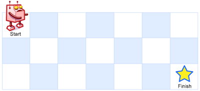

多维动态规划
5.最长回文子串
难度：⭐️⭐️⭐️
给你一个字符串 s，找到 s 中最长的 回文 子串。
示例 1：
输入： s = "babad"
输出： "bab"
解释： "aba" 同样是符合题意的答案。
示例 2：
输入： s = "cbbd"
输出： "bb"
提示：
- 1 <= s.length <= 1000
- s 仅由数字和英文字母组成
解法二 动态规划
动态规划的核心思想是把之前计算的结果缓存起来可以复用。本例中，用dp[i][j]来表明 i~j 之间的字符串是否是回文串，同时在遍历的过程中，判断子串是否是回文串并更新最大长度。对子串s[i, j]分情况讨论： - 子串长度为 1，是回文串，dp[i][j] = true； - 子串长度为 2，首尾字符相等就是回文串，dp[i][j] = s[i] == s[j]； - 子串长度超过 2，减掉首尾字符，根据dp[i + 1][j - 1]来判断，dp[i][j] = ch[i] == ch[j] && dp[i + 1][j - 1];
注意，由于dp[i][j]依赖 dp[i+1][j-1]，所以下标 i 从大到小遍历，下标 j 从小到大遍历。
动态规划
public String longestPalindrome(String s) {
char[] ch = s.toCharArray();
boolean[][] dp = new boolean[ch.length][ch.length];
int max = 0;
int left = 0;
for (int i = ch.length - 1; i >= 0; i--) {
for (int j = i; j < ch.length; j++) {
int length = j - i + 1;
if (length == 1) {
dp[i][j] = true;
} else if (length == 2) {
dp[i][j] = ch[i] == ch[j];
} else {
dp[i][j] = ch[i] == ch[j] && dp[i + 1][j - 1];
}
if (dp[i][j]) {
if (length > max) {
left = i;
max = length;
}
}
}
}
return s.substring(left, left + max);
}
解法二 中心扩展法
从每个位置开始，找到回文串，分两种情况，长度为奇数和偶数的。不必每次都取字符串的子串，只记录最大子串的左边界和字符串长度即可，最后在取一次substring。
空间复杂度比动态规划低。
中心扩展法
public String longestPalindrome(String s) {
int max = 0;
int left = 0;
char[] ch = s.toCharArray();
for (int i = 0; i < ch.length; i++) {
int[] odd = find(ch, i, i);
int[] even = find(ch, i, i + 1);
if (odd[1] - odd[0] + 1 > max) {
left = odd[0];
max = odd[1] - odd[0] + 1;
}
if (even[1] - even[0] + 1 > max) {
left = even[0];
max = even[1] - even[0] + 1;
}
}
return s.substring(left, left + max);
}
private int[] find(char[] s, int left, int right) {
while (left >= 0 && right <= s.length - 1 && s[left] == s[right]) {
left--;
right++;
}
return new int[]{left + 1, right - 1};
}
62. 不同路径
难度：⭐️⭐️
一个机器人位于一个 m x n 网格的左上角 （起始点在下图中标记为 “Start” ）。
机器人每次只能向下或者向右移动一步。机器人试图达到网格的右下角（在下图中标记为 “Finish” ）。
问总共有多少条不同的路径？

示例 1：
输入：m = 3, n = 7
输出：28
示例 2：
输入：m = 3, n = 2
输出：3
解释：
从左上角开始，总共有 3 条路径可以到达右下角。
1. 向右 -> 向下 -> 向下
2. 向下 -> 向下 -> 向右
3. 向下 -> 向右 -> 向下
示例 3：
输入：m = 7, n = 3
输出：28
示例 4：
输入：m = 3, n = 3
输出：6
提示：
- 1 <= m, n <= 100
- 题目数据保证答案小于等于 2 * 109
解法一 动态规划
由于只能向右和向下走，很容易找到状态转移方程 dp[i][j] = dp[i - 1][j] + dp[i][j - 1]，注意考虑边界情况。
时间复杂度：O(mn)
空间复杂度：O(mn)
动态规划
也可以优化成滚动数组，用一维数组只记录当前列的值。
时间复杂度：O(mn)
空间复杂度：O(mn)
动态规划
方法二：组合数学
整个过程中，需要走 m + n - 2 步，其中向右走 m - 1 步，向下走 n - 1 步，可以直接用排列组合 \(C^{n-1}_{m+n-2}\)，值为 \(\frac{(m+n-2)!}{(m-1)!(n-1)!}\)
时间复杂度：O(m)
空间复杂度：O(1)
64.最小路径和
给定一个包含非负整数的 m x n 网格 grid ，请找出一条从左上角到右下角的路径，使得路径上的数字总和为最小。
说明：每次只能向下或者向右移动一步。

解法一 动态规划
和62的解法相同，只需要记录上一步的最小值即可。
72. 编辑距离
难度: ⭐️⭐️⭐️⭐️
给你两个单词 word1 和 word2， 请返回将 word1 转换成 word2 所使用的最少操作数 。
你可以对一个单词进行如下三种操作：
- 插入一个字符
- 删除一个字符
- 替换一个字符
示例 1：
输入：word1 = "horse", word2 = "ros"
输出：3
解释：
horse -> rorse (将 'h' 替换为 'r')
rorse -> rose (删除 'r')
rose -> ros (删除 'e')
示例 2：
输入：word1 = "intention", word2 = "execution"
输出：5
解释：
intention -> inention (删除 't')
inention -> enention (将 'i' 替换为 'e')
enention -> exention (将 'n' 替换为 'x')
exention -> exection (将 'n' 替换为 'c')
exection -> execution (插入 'u')
提示：
0 <= word1.length, word2.length <= 500word1和word2由小写英文字母组成
解法一 动态规划
对字符串 A 和字符串 B 编辑时等价的操作有 3 种：
- A 删除一个字符 或 B 插入一个字符
- A 插入一个字符 或 A 删除一个字符
- A 变换一个字符 或 B 变换一个字符
使用动态规划，定义数组 dp[i][j] 表示 A 的子串 A[0, i] 到 B 的子串 B[0, j] 的最小编辑距离，则 dp 的最后一个元素值即为此问题的解。
注意到 A[0] 表示 A 长度为 0 的子串，即空串，到 B[0, j] 的编辑距离是 j，此时一直对插入即可，同理 B[0] 也是一样，因此可以初始化 dp 的第 0 行和第 0 列的值。
对于 i > 0 且 j > 0 时，dp[i][j] 的取值可以从上一步计算出来：
dp[i - i][j]表示 A[0, i - 1] 到 B[0, j] 的最小编辑距离，在 A 的末尾追加一个一个字符即得到 A[0,i] 到 B[0, j] 的最小编辑距离dp[i][j] = dp[i - 1][j] + 1；- 同上，从 A[0, i] 到 B[0, j - 1] 的最小编辑距离，对 B 插入一个字符串，可以推导出来
dp[i][j] = dp[i][j - 1] + 1； - 一样的，
dp[i - 1][j - 1]，A 和 B 都少一个字符串，分两种情况讨论：1）A[i] == B[j]，有dp[i][j] = dp[i - 1][j - 1]，不做变换；1）A[i] != B[j]，dp[i][j] = dp[i - 1][j - 1] + 1，变换一个字符；
综合上面的三种情况，取最小值即可，可以得到状态转移方程：
当 A[i] == B[j]，直接回溯到上一个位置：
dp[i][j] = dp[i - 1][j - 1]；
当 A[i] != B[j]，取增、删、改的最小值：
dp[i][j] = min(dp[i - 1][j] + 1, dp[i][j - 1] + 1, dp[i - 1][j - 1] + 1)。
时间复杂度：O(mn)
空间复杂度：O(mn)
动态规划
public int minDistance(String word1, String word2) {
int m = word1.length();
int n = word2.length();
if (m * n == 0) {
return m + n;
}
int[][] dp = new int[m + 1][n + 1];
for (int i = 0; i < m + 1; i++) {
dp[i][0] = i;
}
for (int j = 0; j < n + 1; j++) {
dp[0][j] = j;
}
for (int i = 1; i < m + 1; i++) {
for (int j = 1; j < n + 1; j++) {
if (word1.charAt(i - 1) == word2.charAt(j - 1)) {
// 回溯上一个
dp[i][j] = dp[i - 1][j - 1];
} else {
// 增、删、改的最小值
dp[i][j] = Math.min(dp[i - 1][j - 1], Math.min(dp[i - 1][j], dp[i][j - 1])) + 1;
}
}
}
return dp[m][n];
}
解法二：一维数组的动态规划
在二维数组中，由于每次遍历的时候，只用到了左上、左、上 3 个元素，可以优化成一维数组。
时间复杂度：O(mn)
空间复杂度：O(min(m, n))，交换参数不影响结果，可以用较小长度的一维数组，能节省一部分空间。
一维数组
public int minDistance(String word1, String word2) {
int m = word1.length();
int n = word2.length();
if (m * n == 0) {
return m + n;
}
// 一维滚动数组：dp[j] 表示当前行第 j 列的值
// 在更新前，dp[j] 是上一行（i-1）第 j 列的值
int[] dp = new int[n + 1];
// 初始化第 0 行：空串转换成 word2 前 j 个字符需要 j 次插入
for (int j = 0; j <= n; j++) {
dp[j] = j;
}
for (int i = 1; i <= m; i++) {
int prev = dp[0]; // 保存左上角 dp[i-1][0]（即上一行第 0 列）
dp[0] = i; // 当前行第 0 列：word1 前 i 个字符转成空串需要 i 次删除
for (int j = 1; j <= n; j++) {
int temp = dp[j]; // 保存上一行第 j 列 dp[i-1][j]（即“上”），因为马上要被覆盖
if (word1.charAt(i - 1) == word2.charAt(j - 1)) {
dp[j] = prev; // 字符相等，取左上角 dp[i-1][j-1]
} else {
// 否则取 左(dp[j-1])、上(temp)、左上(prev) 三者最小值 + 1
dp[j] = Math.min(Math.min(dp[j - 1], temp), prev) + 1;
}
prev = temp; // 为下一个 j 准备左上角：原来的 dp[i-1][j]
}
}
return dp[n];
}
1143.最长公共子序列
难度：⭐️⭐️⭐️
给定两个字符串 text1 和 text2，返回这两个字符串的最长 公共子序列 的长度。如果不存在 公共子序列 ，返回 0 。
一个字符串的 子序列 是指这样一个新的字符串：它是由原字符串在不改变字符的相对顺序的情况下删除某些字符（也可以不删除任何字符）后组成的新字符串。
例如，"ace" 是 "abcde" 的子序列，但 "aec" 不是 "abcde" 的子序列。
两个字符串的 公共子序列 是这两个字符串所共同拥有的子序列。
解法一 动态规划
定义二维数组dp[][]，dp[i][j] 表示 text1[0, i] 和 text2[0, j]的最长公共子序列的长度，状态转移方程为：
- 当
text1[i] == text[j]时，两个字符串都往前回溯一个字符，dp[i][j] = dp[i - 1][j - 1] + 1； - 当
text1[i] != text[j]时，分别把text1和text2往前回溯一个字符，取最大值；
可以将text1和text2转成字符数组，空间复杂度增加一点，但时间复杂度可以减低。
动态规划
public int longestCommonSubsequence(String text1, String text2) {
char[] t1 = text1.toCharArray();
char[] t2 = text2.toCharArray();
int n = t1.length;
int m = t2.length;
int[][] f = new int[n+1][m+1];
for(int i = 0; i < n; i++){
for(int j = 0; j < m; j++){
if(t1[i] == t2[j]){
f[i+1][j+1] = f[i][j]+1;
} else {
f[i+1][j+1] = Math.max(f[i][j+1],f[i+1][j]);
}
}
}
return f[n][m];
}
解法二 滚动数组
由于动态规划遍历的过程中，只用到了前一次的值，和编辑距离类似，可以使用一维滚动数组优化空间复杂度。取较小的值作为数组长度，可以更省空间。
public int longestCommonSubsequence(String text1, String text2) {
if (text1.length() > text2.length()) {
return longestCommonSubsequence(text2, text1);
}
int m = text1.length();
int n = text2.length();
char[] c1 = text1.toCharArray();
char[] c2 = text2.toCharArray();
int[] dp = new int[n + 1];
for (int i = 1; i <= m; i++) {
int prev = 0;
for (int j = 1; j <= n; j++) {
int temp = dp[j];
if (c1[i - 1] == c2[j - 1]) {
dp[j] = prev + 1;
} else {
dp[j] = Math.max(dp[j], dp[j - 1]);
}
prev = temp;
}
}
return dp[n];
}